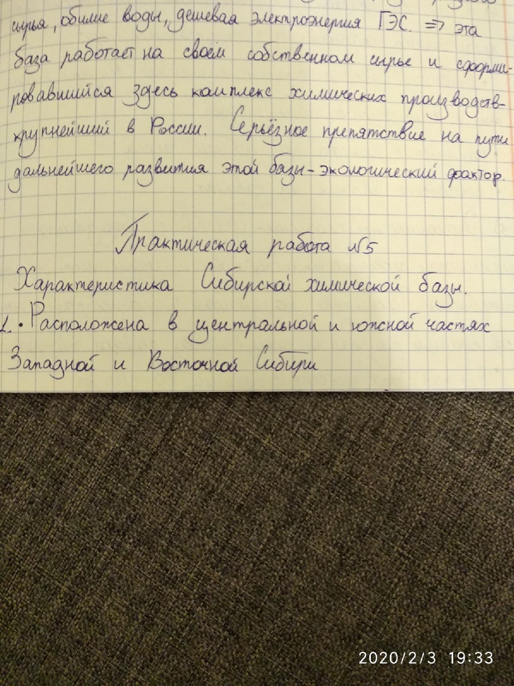
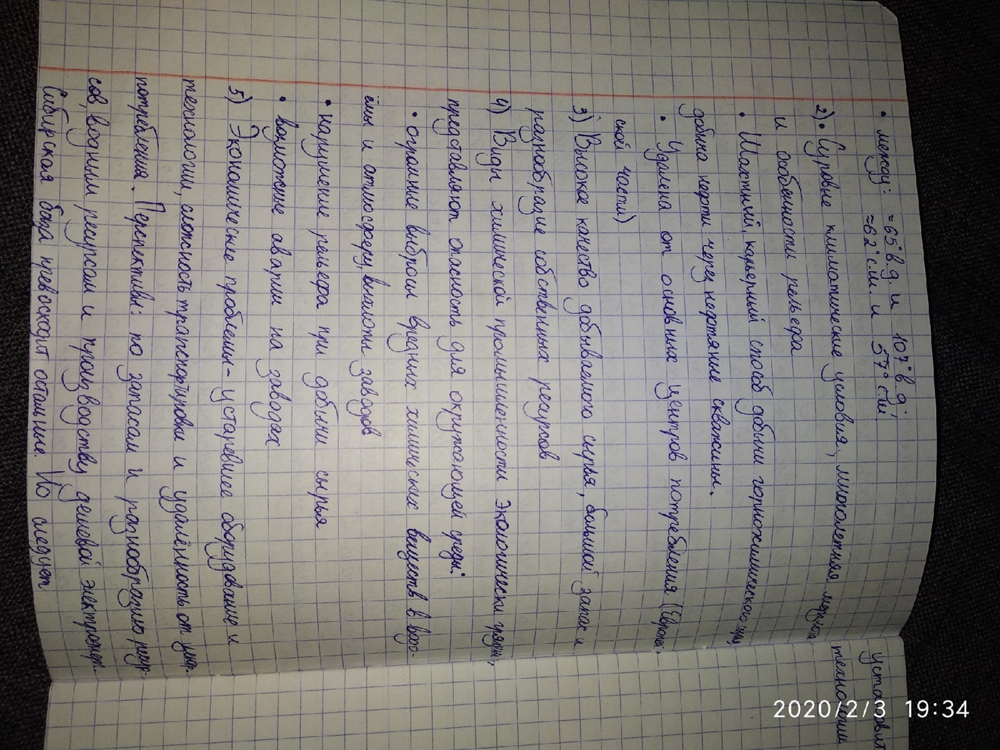
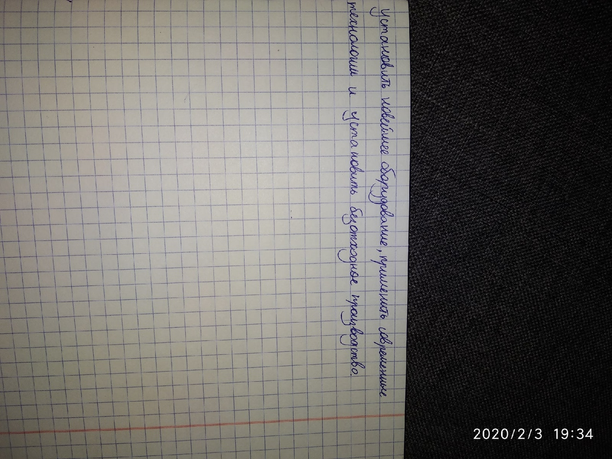

4.02.2020
География
Таблица:
4 химичиских базы: Название базы Сырьё Основные производства Центры Центральная Восфориты, древесина Азотные минеральные удобрения, Фосфорные минеральные удобрения Липецк, Щекино Северо-европейская Аппатиты, нефть, газ, уголь, древесина Минеральные удобрения, лесозаготовка, древообработка, целлюлозно-бумажное производство, лесохимическое производство Кировск, Череповец, Великий Новгород, Санкт-Петербург, Кингисепп Сибирская Поваренная соль, калийные соли, плауберова соль, нефть, газ, каменный уголь, древесина Минеральные удобрения, полимерные металлы, переработка полимерных металлов, лесозаготовка, лесообработка Практическая работа:
Чтобы просмотреть: удерживайте палец на картинке (Или нажмите сильно, если поддерживается функция 3DTOUCH), затем выберите пункт "Открыть изображнеие"s
История:
Русский язык:
1-4;
2-1;
3-4;
4-2;
5-1;
6-2;
7-2;
8-4;
9-1;
10-3;
11-4;
12-4;
13-1;
14-4;
15-3.